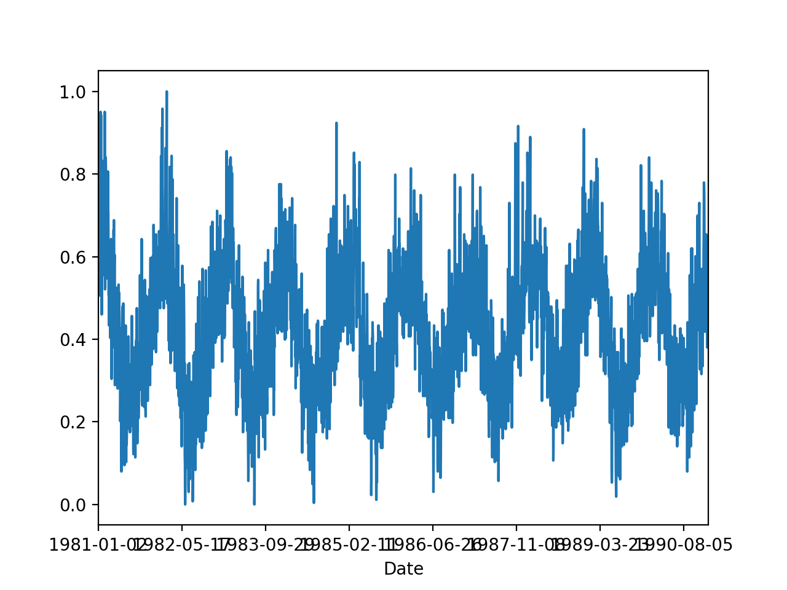
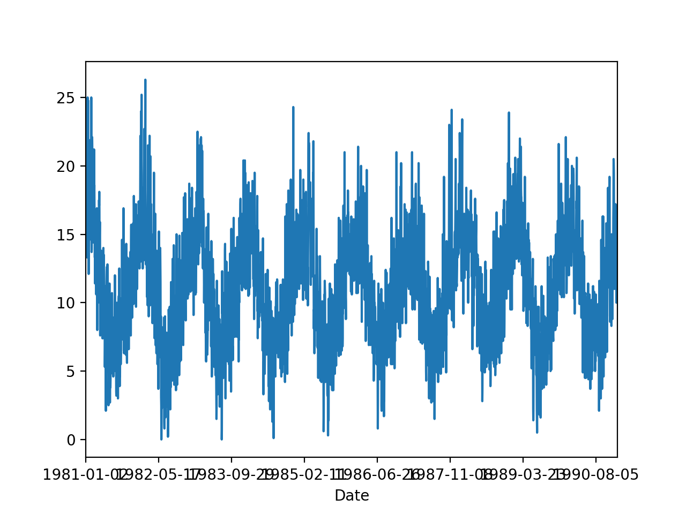
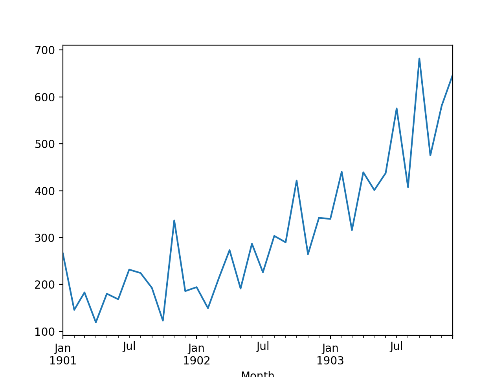
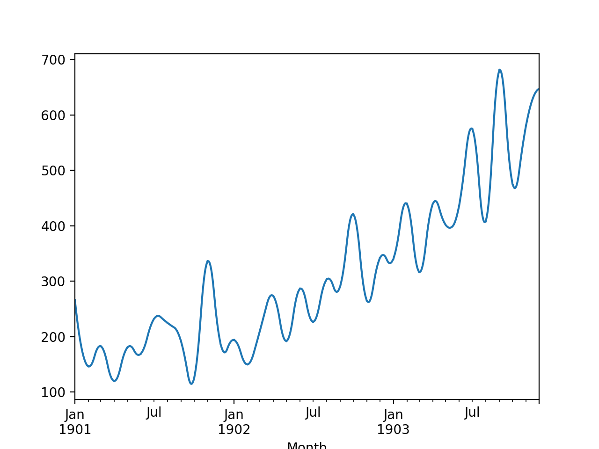
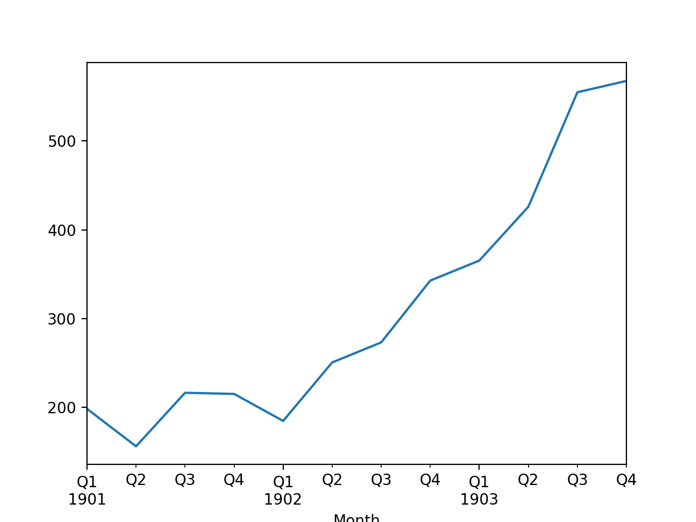
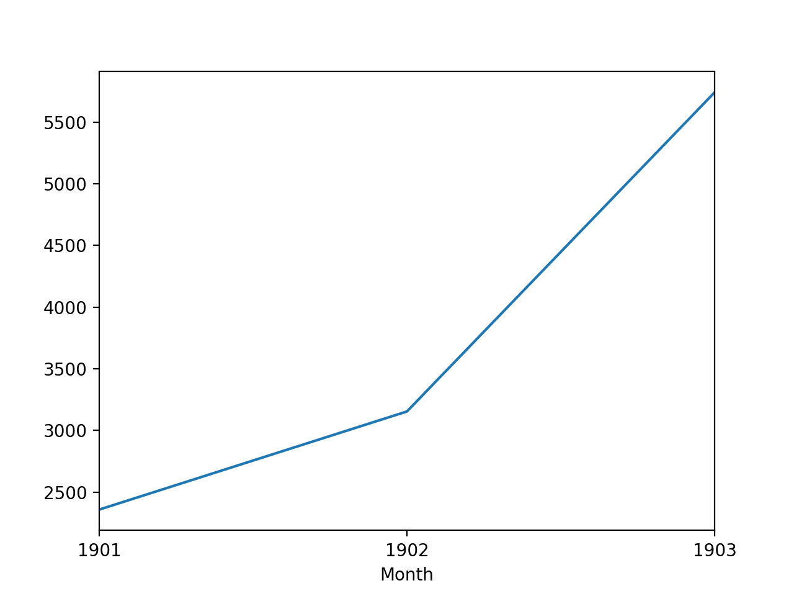

时间序列分析-机器学习¶
将时间序列数据转换为监督机器学习问题数据
将单变量时间序列数据转换为机器学习问题数据
将多变量时间序列数据转换为机器学习问题数据
1.时间序列数据 vs 监督机器学习数据¶
1.1 数据形式¶
时间序列是按照时间索引排列的一串数字，可以理解为为有序值构成的一列数据或有序列表：
timestamp |
value |
|---|---|
2019-10-01 00:00:00 |
0 |
2019-10-01 01:00:00 |
1 |
2019-10-01 02:00:00 |
2 |
2019-10-01 03:00:00 |
3 |
2019-10-01 04:00:00 |
4 |
监督机器学习问题由自变量 \(X\) 和 因变量 \(Y\) 构成，通常使用自变量 \(X\) 来预测因变量 \(Y\):
\(X_1\) |
\(X_2\) |
\(\cdots\) |
\(X_p\) |
\(Y\) |
|---|---|---|---|---|
a1 |
b1 |
\(\cdots\) |
c1 |
y1 |
a2 |
b2 |
\(\cdots\) |
c2 |
y2 |
a3 |
b3 |
\(\cdots\) |
c3 |
y3 |
a4 |
b4 |
\(\cdots\) |
c4 |
y4 |
a5 |
b5 |
\(\cdots\) |
c5 |
y5 |
1.2 模型1¶
\(\sum_{i=0}^{19}a_{i,j}A_{t-i}+\sum_{i=0}^{19}b_{i,j}B_{t-i}+ \cdots+\sum_{i=0}^{19}z_{i,j}Z_{t-i} = A_{t+j}+\epsilon, j = 1, 2, 3, 4, 5, 6\)
\(A_1\) |
\(A_2\) |
\(cdots\) |
\(A_{20}\) |
\(B_1\) |
\(B_1\) |
\(cdots\) |
\(B_{20}\) |
\(cdots\) |
\(Z_{1}\) |
\(Z_{2}\) |
\(cdots\) |
\(Z_{20}\) |
\(A_{21}\) |
|---|---|---|---|---|---|---|---|---|---|---|---|---|---|
\(a_{(0, 1)}\) \(a_{(0, 2)}\) \(a_{(0, 3)}\) \(a_{(0, 4)}\) \(a_{(0, 5)}\) \(a_{(0, 6)}\) |
\(a_{(1, 1)}\) \(a_{(1, 2)}\) \(a_{(1, 3)}\) \(a_{(1, 4)}\) \(a_{(1, 5)}\) \(a_{(1, 6)}\) |
\(cdots\) \(cdots\) \(cdots\) \(cdots\) \(cdots\) \(cdots\) |
\(a_{(19, 1)}\) \(a_{(19, 2)}\) \(a_{(19, 3)}\) \(a_{(19, 4)}\) \(a_{(19, 5)}\) \(a_{(19, 6)}\) |
\(b_{(0, 1)}\) \(b_{(0, 2)}\) \(b_{(0, 3)}\) \(b_{(0, 4)}\) \(b_{(0, 5)}\) \(b_{(0, 6)}\) |
\(b_{(1, 1)}\) \(b_{(1, 2)}\) \(b_{(1, 3)}\) \(b_{(1, 4)}\) \(b_{(1, 5)}\) \(b_{(1, 6)}\) |
\(cdots\) \(cdots\) \(cdots\) \(cdots\) \(cdots\) \(cdots\) |
\(b_{(19, 1)}\) \(b_{(19, 2)}\) \(b_{(19, 3)}\) \(b_{(19, 4)}\) \(b_{(19, 5)}\) \(b_{(19, 6)}\) |
\(cdots\) \(cdots\) \(cdots\) \(cdots\) \(cdots\) \(cdots\) |
\(z_{(0, 1)}\) \(z_{(0, 2)}\) \(z_{(0, 3)}\) \(z_{(0, 4)}\) \(z_{(0, 5)}\) \(z_{(0, 6)}\) |
\(z_{(1, 1)}\) \(z_{(1, 2)}\) \(z_{(1, 3)}\) \(z_{(1, 4)}\) \(z_{(1, 5)}\) \(z_{(1, 6)}\) |
\(cdots\) \(cdots\) \(cdots\) \(cdots\) \(cdots\) \(cdots\) |
\(z_{(19, 1)}\) \(z_{(19, 2)}\) \(z_{(19, 3)}\) \(z_{(19, 4)}\) \(z_{(19, 5)}\) \(z_{(19, 6)}\) |
\(a_{(20, 1)}\) \(a_{(20, 2)}\) \(a_{(20, 3)}\) \(a_{(20, 4)}\) \(a_{(20, 5)}\) \(a_{(20, 6)}\) |
2.时间序列数据特征工程¶
三种特征：
Date Time Features
Lag Features
Window Features
2.1 创建 Date Time Features¶
特征：
一年中的月分
一个月中的日期
一天过去了几分钟
一天的时间
营业时间与否
周末与否
一年中的季节
一年中的业务季度
夏时制与否
公共假期与否
是否是闰年
数据：
澳大利亚墨尔本市10年（1981-1990年）内的最低每日温度
import pandas as pd
from pandas import Grouper
import matplotlib.pyplot as plt
series = pd.read_csv("https://raw.githubusercontent.com/jbrownlee/Datasets/master/daily-min-temperatures.csv",
header = 0,
index_col = 0,
parse_dates = True,
squeeze = True)
print(series.head())
Date,Temp
1981-01-01,20.7
1981-01-02,17.9
1981-01-03,18.8
1981-01-04,14.6
1981-01-05,15.8
1981-01-06,15.8
series.plot()
plt.show()

series.hist()
plt.show()

df = pd.DataFrame()
df["month"] = [series.index[i].month for i in range(len(series))]
df["day"] = [series.index[i].day for i in range(len(series))]
df["temperature"] = [series[i] for i in range(len(series))]
print(df.head())
month day temperature
0 1 2 17.9
1 1 3 18.8
2 1 4 14.6
3 1 5 15.8
4 1 6 15.8
2.2 创建 Lagging 特征¶
pushed forward
pulled back
import pandas as pd
def series_to_supervised(data, n_lag = 1, n_fut = 1, selLag = None, selFut = None, dropnan = True):
"""
Converts a time series to a supervised learning data set by adding time-shifted prior and future period
data as input or output (i.e., target result) columns for each period
:param data: a series of periodic attributes as a list or NumPy array
:param n_lag: number of PRIOR periods to lag as input (X); generates: Xa(t-1), Xa(t-2); min= 0 --> nothing lagged
:param n_fut: number of FUTURE periods to add as target output (y); generates Yout(t+1); min= 0 --> no future periods
:param selLag: only copy these specific PRIOR period attributes; default= None; EX: ['Xa', 'Xb' ]
:param selFut: only copy these specific FUTURE period attributes; default= None; EX: ['rslt', 'xx']
:param dropnan: True= drop rows with NaN values; default= True
:return: a Pandas DataFrame of time series data organized for supervised learning
NOTES:
(1) The current period's data is always included in the output.
(2) A suffix is added to the original column names to indicate a relative time reference: e.g., (t) is the current
period; (t-2) is from two periods in the past; (t+1) is from the next period
(3) This is an extension of Jason Brownlee's series_to_supervised() function, customized for MFI use
"""
n_vars = 1 if type(data) is list else data.shape[1]
df = pd.DataFrame(data)
origNames = df.columns
cols, names = list(), list()
# include all current period attributes
cols.append(df.shift(0))
names += [("%s" % origNames[j]) for j in range(n_vars)]
# lag any past period attributes (t-n_lag, ..., t-1)
n_lag = max(0, n_lag) # force valid number of lag periods
# input sequence (t-n, ..., t-1)
for i in range(n_lag, 0, -1):
suffix = "(t-%d)" % i
if (None == selLag):
cols.append(df.shift(i))
names += [("%s%s" % (origNames[j], suffix)) for j in range(n_vars)]
else:
for var in (selLag):
cols.append(df[var].shift(i))
names += [("%s%s" % (var, suffix))]
# include future period attributes (t+1, ..., t+n_fut)
n_fut = max(n_fut, 0)
# forecast sequence (t, t+1, ..., t+n)
for i in range(0, n_fut + 1):
suffix = "(t+%d)" % i
if (None == selFut):
cols.append(df.shift(-i))
names += [("%s%s" % (origNames[j], suffix)) for j in range(n_vars)]
else:
for var in (selFut):
cols.append(df[var].shift(-i))
names += [("%s%s" % (var, suffix))]
# put it all together
agg = pd.concat(cols, axis = 1)
agg.columns = names
# drop rows with NaN values
if dropnan:
agg.dropna(inplace = True)
return agg
滑动窗口特征：
temps = pd.DataFrame(series.values)
df = pd.concat([temps.shift(3), temps.shift(2), temps.shift(1), temps], axis = 1)
df.columns = ["t-3", "t-2", "t-1", "t+1"]
df.dropna(inplace = True)
print(df.head())
t-3 t-2 t-1 t+1
3 17.9 18.8 14.6 15.8
4 18.8 14.6 15.8 15.8
5 14.6 15.8 15.8 15.8
6 15.8 15.8 15.8 17.4
7 15.8 15.8 17.4 21.8
滑动窗口统计量特征：
temps = pd.DataFrame(series.values)
shifted = temps.shift(1)
window = shifted.rolling(window = 2)
means = window.mean()
# means = shifted.rolling(window = 2).mean()
df = pd.concat([mean, temps], axis = 1)
df.columns = ["mean(t-2,t-1)", "t+1"]
print(df.head())
mean(t-2,t-1) t+1
0 NaN 17.9
1 NaN 18.8
2 18.35 14.6
3 16.70 15.8
4 15.20 15.8
temps = pd.DataFrame(series.values)
width = 3
shifted = temps.shift(width - 1)
window = shifted.rolling(windon = width)
df = pd.concat([window.min(), window.mean(), window.max(), temps], axis = 1)
df.columns = ["min", "mean", "max", "t+1"]
print(df.head())
min mean max t+1
0 NaN NaN NaN 17.9
1 NaN NaN NaN 18.8
2 NaN NaN NaN 14.6
3 NaN NaN NaN 15.8
4 14.6 17.1 18.8 15.8
2.3 创建 Window 变量¶
temps = pd.DataFrame(series.values)
window = temps.expanding()
df = pd.concat([window.min(), window.mean(), window.max(), temps.shift(-1)], axis = 1)
df.columns = ["min", "mean", "max", "t+1"]
print(df.head())
min mean max t+1
0 17.9 17.900 17.9 18.8
1 17.9 18.350 18.8 14.6
2 14.6 17.100 18.8 15.8
3 14.6 16.775 18.8 15.8
4 14.6 16.580 18.8 15.8
3. 时间序列特征正规化和标准化¶
数据：
澳大利亚墨尔本市10年（1981-1990年）内的最低每日温度
import pandas as pd
from pandas import Grouper
import matplotlib.pyplot as plt
series = pd.read_csv("https://raw.githubusercontent.com/jbrownlee/Datasets/master/daily-min-temperatures.csv",
header = 0,
index_col = 0,
parse_dates = True,
squeeze = True)
print(series.head())
Date,Temp
1981-01-01,20.7
1981-01-02,17.9
1981-01-03,18.8
1981-01-04,14.6
1981-01-05,15.8
1981-01-06,15.8
series.plot()
plt.show()
series.hist()
plt.show()
3.1 正规化 Normalize¶
import pandas as pd
from sklearn.preprocessing import MinMaxScaler
# Data
series = pd.read_csv("daily-minimum-temperautures-in-me.csv",
header = 0,
index_col = 0)
print(series.head())
values = series.values
values = values.reshape((len(values), 1))
# Normalization
scaler = MinMaxScaler(feature_range = (0, 1))
scaler = scaler.fit(values)
print("Min: %f, Max: %f" % (scaler.data_min_, scaler.data_max_))
# 正规化
normalized = scaler.transform(values)
for i in range(5):
print(normalized[i])
# 逆变换
inversed = scaler.inverse_transform(normalized)
for i in range(5):
print(inversed[i])
Temp
Date
1981-01-02 17.9
1981-01-03 18.8
1981-01-04 14.6
1981-01-05 15.8
1981-01-06 15.8
Min: 0.000000, Max: 26.300000
[0.68060837]
[0.7148289]
[0.55513308]
[0.60076046]
[0.60076046]
[17.9]
[18.8]
[14.6]
[15.8]
[15.8]
normalized.plot()

inversed.plot()

3.2 标准化 Standardize¶
from pandas import read_csv
from sklearn.preprocessing import StandarScaler
from math import sqrt
# Data
series = pd.read_csv("daily-minimum-temperatures-in-me.csv",
header = 0,
index_col = 0)
print(series.head())
values = series.values
values = values.reshape((len(values), 1))
# Standardization
scaler = StandardScaler()
scaler = scaler.fit(values)
print("Mean: %f, StandardDeviation: %f" % (scaler.mean_, sqrt(scaler.var_)))
# 标准化
normalized = scaler.transform(values)
for i in range(5):
print(normalized[i])
# 逆变换
inversed = scaler.inverse_transform(normalized)
for i in range(5):
print(inversed[i])
normalized.plot()
inversed.plot()

4. 时间序列重采样(resample)、插值(interpolate)¶
增加或减少时间序列数据的采样评率
上采样到更高的频率并内插新的观测值
下采样到较低的频率并汇总较高频率的观测值
4.1 数据¶
import pandas as pd
import matplotlib.pyplot as plt
from sklearn.metrics import mean_squared_error
def parser(x):
return pd.datetime.strptime("190" + x, "%Y-%m")
series = pd.read_csv("https://raw.githubusercontent.com/jbrownlee/Datasets/master/shampoo.csv",
header = 0,
parse_dates = [0],
index_col = 0,
squeeze = True,
date_parser = parser)
print(series.head())
series.plot()
plt.show()
Month
1901-01-01 266.0
1901-02-01 145.9
1901-03-01 183.1
1901-04-01 119.3
1901-05-01 180.3
Name: Sales, dtype: float64
4.2 上采样¶
上采样、线性插值：
upsampled = series.resample("D")
interpolated = upsampled.interpolate(method = "linear")
print(interpolated.head())
Month
1901-01-01 266.000000
1901-01-02 262.125806
1901-01-03 258.251613
1901-01-04 254.377419
1901-01-05 250.503226
Freq: D, Name: Sales, dtype: float64
interpolated.plot()
plt.show()

上采样、多项式,样条插值：
upsampled = series.resample("D")
interpolated = upsampled.interpolate(method = "spline", order = 2)
print(interpolated.head())
Month
1901-01-01 266.000000
1901-01-02 258.630160
1901-01-03 251.560886
1901-01-04 244.720748
1901-01-05 238.109746
Freq: D, Name: Sales, dtype: float64
interpolated.plot()
plt.show()

4.3 降采样¶
resample = series.resample("Q")
quarterly_mean_sales = resample.mean()
print(quarterly_mean_sales.head())
Month
1901-03-31 198.333333
1901-06-30 156.033333
1901-09-30 216.366667
1901-12-31 215.100000
1902-03-31 184.633333
Freq: Q-DEC, Name: Sales, dtype: float64
quarterly_mean_sales.plot()
plt.show()

resample = series.resample("A")
quarterly_mean_sales = resample.sum()
print(quarterly_mean_sales.head())
Month
1901-12-31 2357.5
1902-12-31 3153.5
1903-12-31 5742.6
Freq: A-DEC, Name: Sales, dtype: float64
quarterly_mean_sales.plot()
plt.show()
